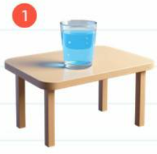

Письменно
Ещё не проверено
Для каждой картинки составьте одну пару «вопрос — ответ»: напишите её и произнесите вслух. Используйте опорные слова. ИИ проверит, соответствует ли вопрос картинке и отвечает ли ответ на вопрос.

Сначала скажите вопрос, затем ответ.
Заполните оба поля и запишите устную пару.
Устная часть проверяется по распознанному тексту. ИИ не оценивает надёжно произношение, ударение и интонацию.
Все три картинки выполнены.